성북구 작업 전 확인사항
폐기물 양, 대형가구 포함 여부, 층수, 엘리베이터 사용 가능 여부, 차량 진입 가능 여부를 먼저 확인하면 상담이 빠릅니다.
성북구는 주거형태와 상가, 오피스텔, 아파트 단지가 함께 있는 지역이기 때문에 폐기물의 양과 반출 동선이 현장마다 다릅니다. 상담 시 사진과 주소를 함께 알려주시면 차량 진입, 엘리베이터 사용, 작업 인원 기준을 더 빠르게 안내할 수 있습니다.
가이드형 현장 안내: 폐기물 처리 전에는 대형가구, 생활폐기물, 재활용 가능 품목을 구분하면 작업 시간이 줄고 비용 안내도 더 정확해집니다.
다세대 주택, 아파트, 오래된 주거지가 함께 있어 현장별 작업 조건 차이가 큰 편입니다.
폐기물 양, 대형가구 포함 여부, 층수, 엘리베이터 사용 가능 여부, 차량 진입 가능 여부를 먼저 확인하면 상담이 빠릅니다.
기본 비용은 25만원부터이며, 차량 대수와 작업 인원, 반출 동선에 따라 최종 비용이 달라질 수 있습니다.
현장 사진을 3~5장 정도 보내주시면 폐기물 양과 작업 범위를 더 정확하게 안내할 수 있습니다.
성북구처럼 도심과 주거지가 함께 있는 지역은 차량 정차 위치와 반출 시간이 중요합니다. 특히 건물 앞 정차가 어려운 경우에는 작업 인원과 이동 거리에 따라 시간이 달라질 수 있습니다.
성북구 현장에서는 건물 앞 정차 시간이 제한되어 폐기물을 먼저 분리한 뒤 짧은 시간 안에 순차적으로 반출했습니다.
기본 비용은 25만원부터이며, 폐기물 양, 차량 대수, 층수, 엘리베이터 사용 여부, 차량 진입 가능 여부에 따라 달라질 수 있습니다. 상담 시 사진을 보내주시면 더 빠르게 안내할 수 있습니다.
가능합니다. 다만 주차와 정차 가능 시간을 먼저 확인하는 것이 좋습니다.
가능합니다. 층수와 폐기물 양에 따라 작업 인원이 달라질 수 있습니다.
가능합니다. 현장 사진을 확인한 뒤 반출 순서를 안내합니다.
작업 범위를 과하게 잡지 않고 현장에 필요한 정리부터 반출까지 안내합니다.
가구, 생활용품, 잡동사니, 오래된 짐까지 현장 상황에 맞춰 정리합니다.
이사 전후 남은 짐과 대형폐기물을 빠르게 분류하고 반출합니다.
혼자 정리하기 어려운 주거공간의 폐기물과 생활쓰레기를 단계적으로 정리합니다.
오래 비어 있던 집의 가구, 생활폐기물, 잔짐을 한 번에 정리합니다.
사무실, 매장, 창고 정리 후 남은 집기와 폐기물을 처리합니다.
정확한 비용은 폐기물 양, 차량 대수, 층수, 엘리베이터 유무, 작업 인원에 따라 달라질 수 있습니다.
주소, 폐기물 종류, 대략적인 양을 확인합니다.
차량 진입, 층수, 엘리베이터 여부를 확인합니다.
가구, 생활폐기물, 잔짐을 작업 순서에 맞게 정리합니다.
폐기물 반출 후 현장을 깔끔하게 정돈합니다.
현장 상황에 따라 분리정리, 반출, 마무리 정돈 순서로 진행합니다.

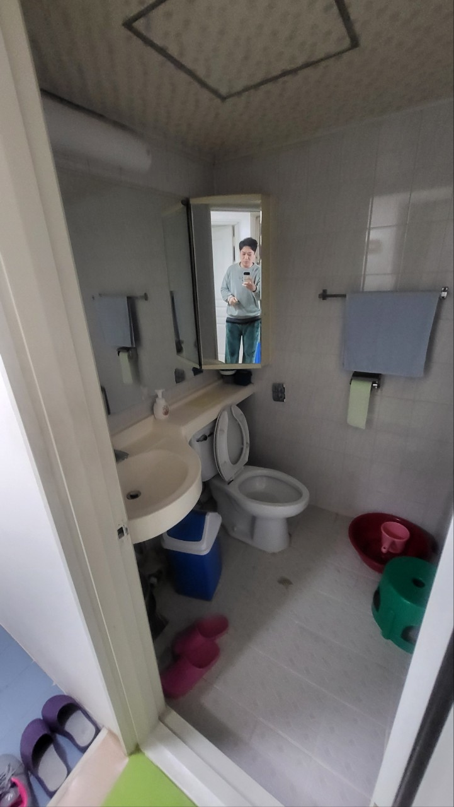
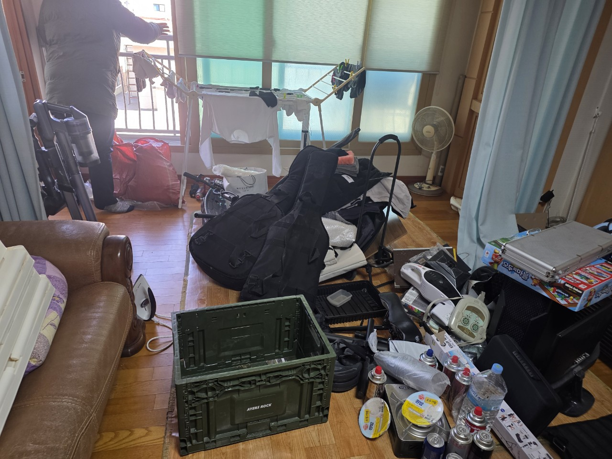
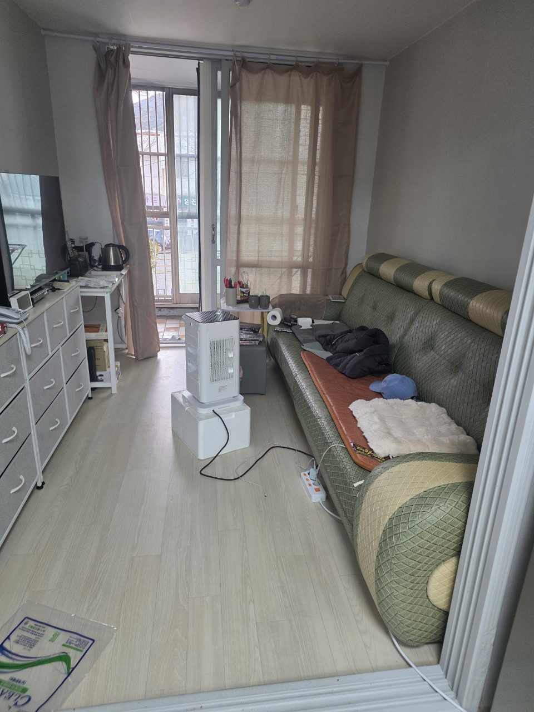
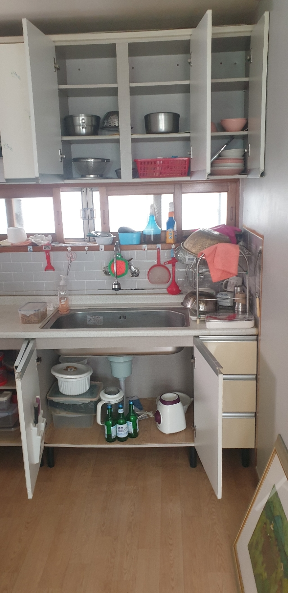
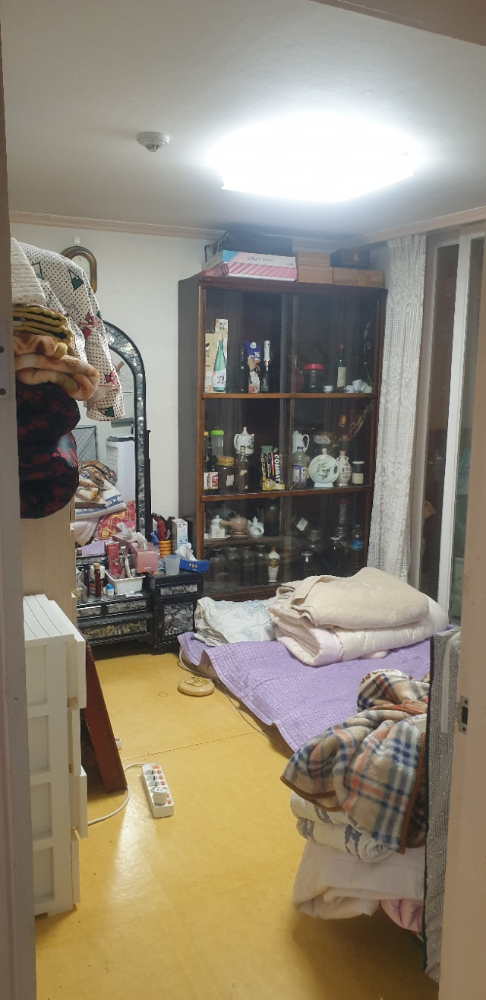
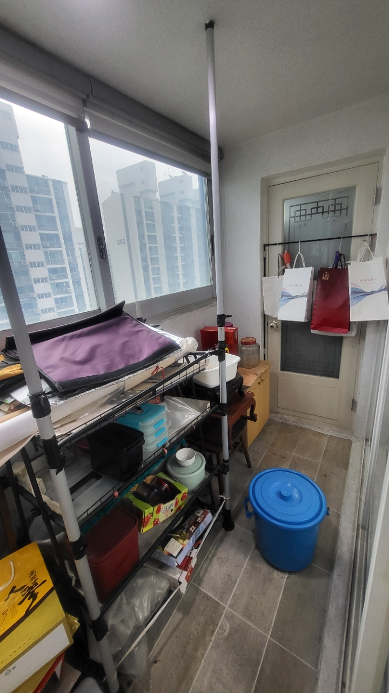
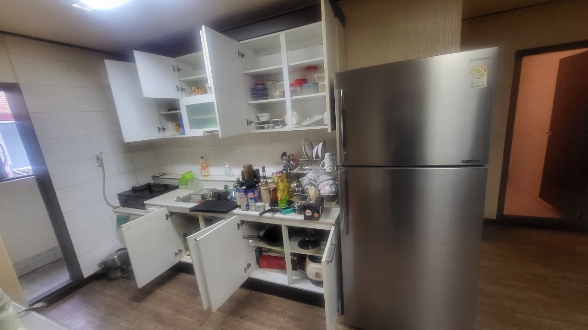


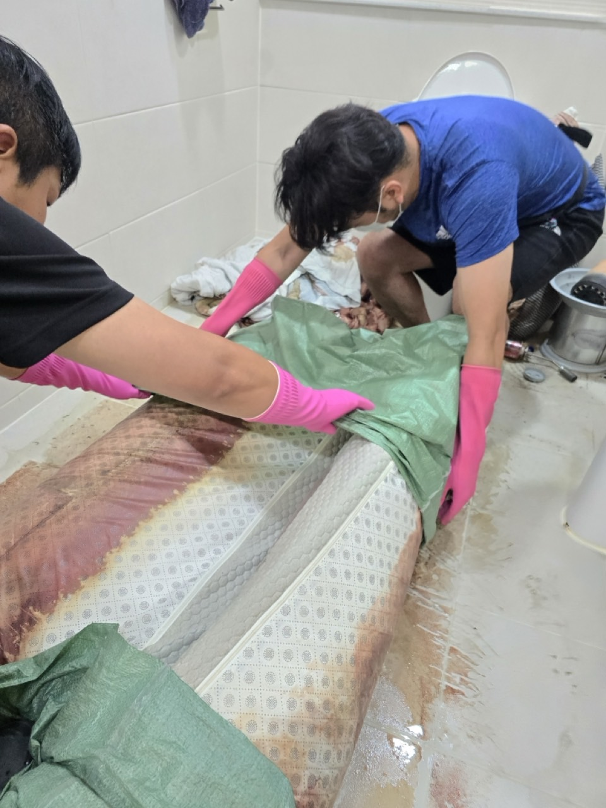

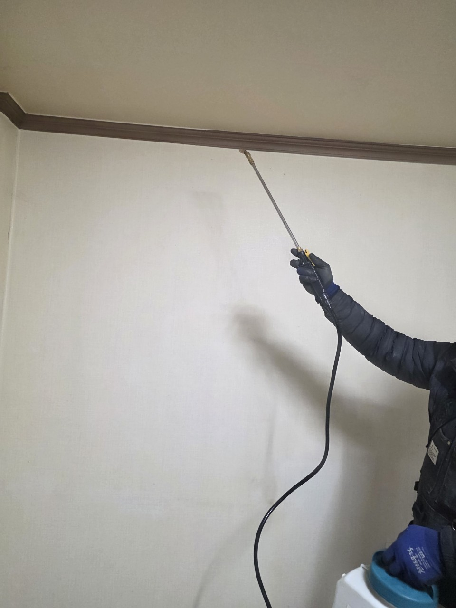
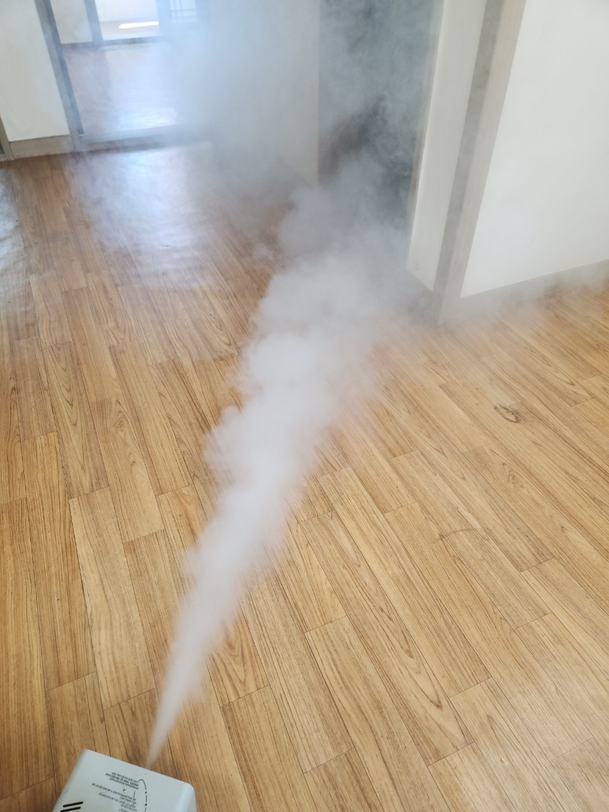


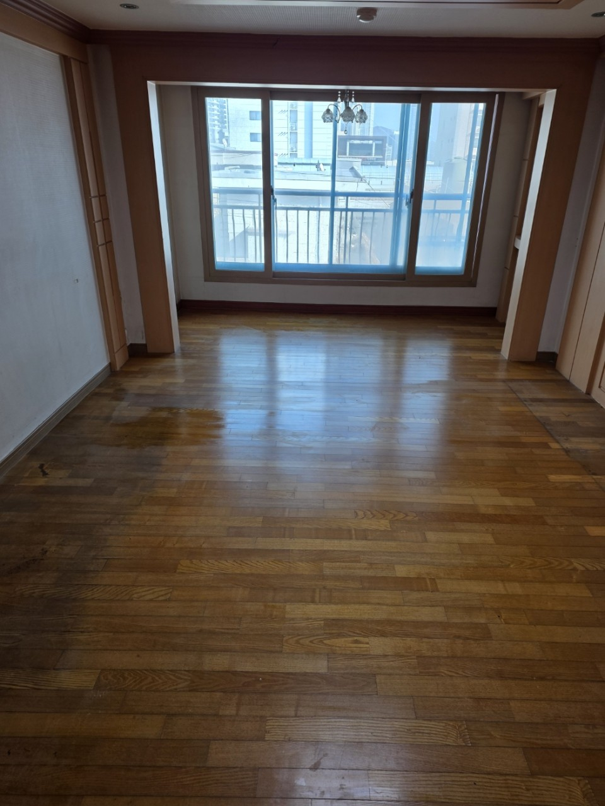
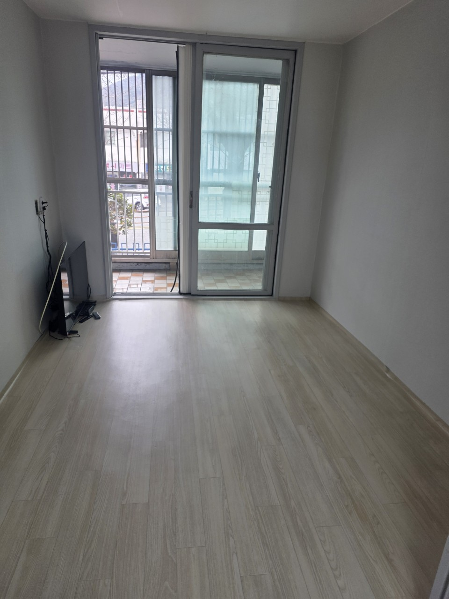
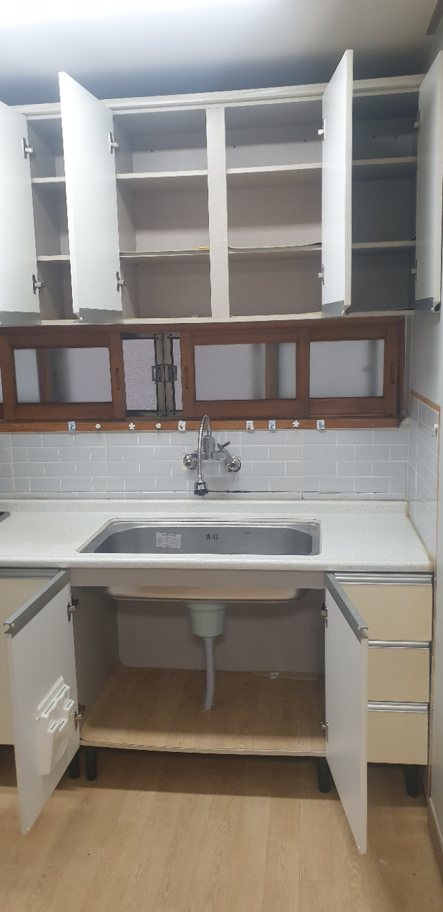
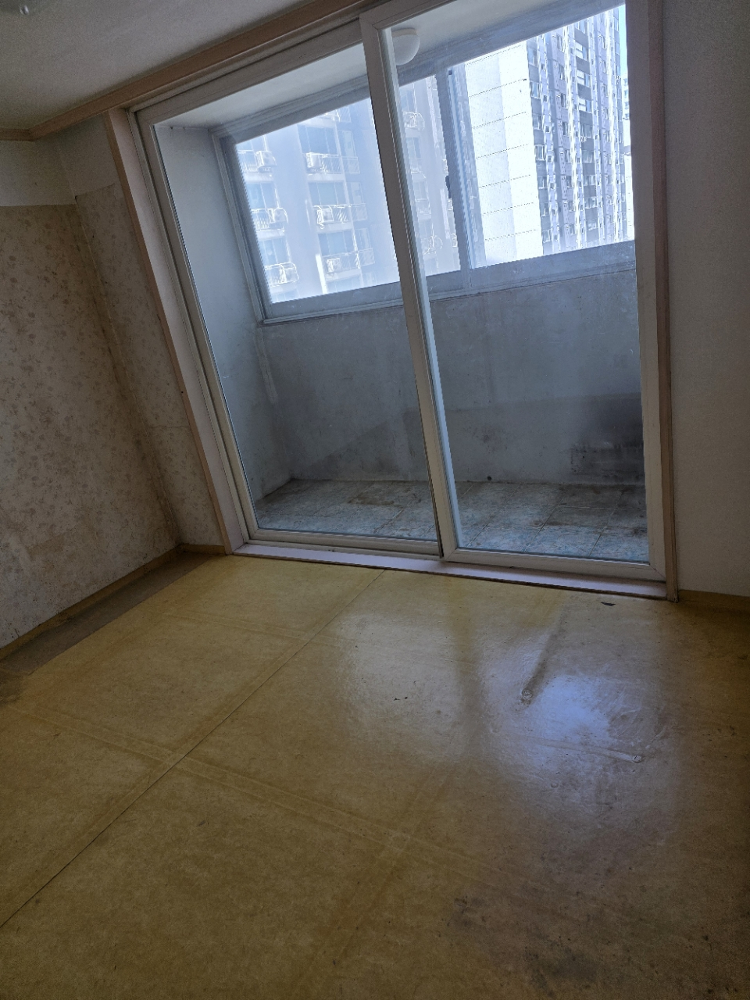
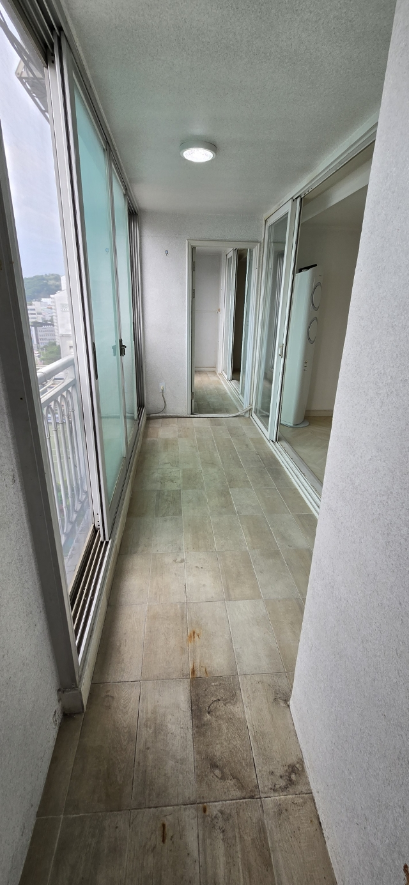
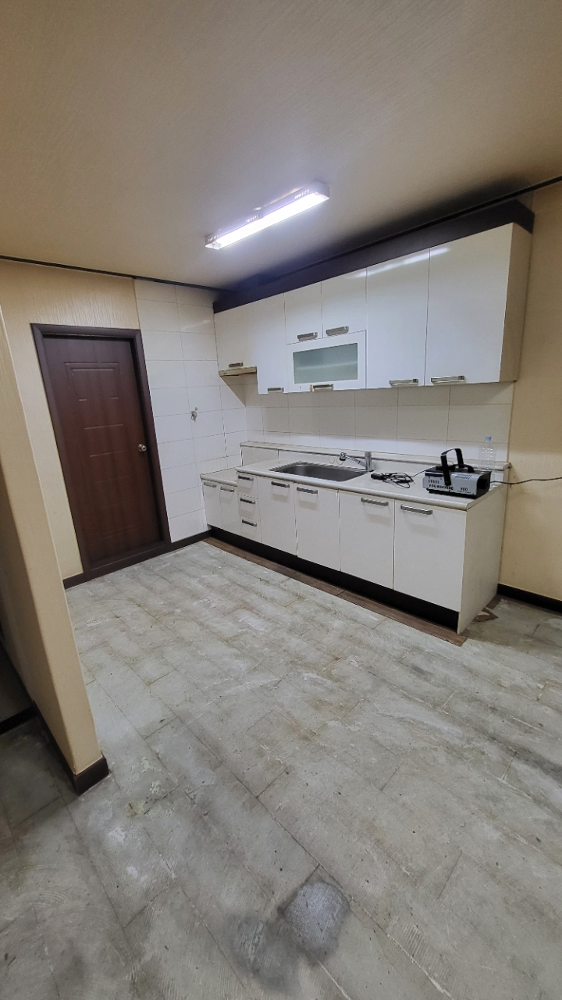
서울 각 지역에서 진행된 폐기물 정리 상담 사례를 바탕으로 구성했습니다.
이사 후 남은 가구와 생활폐기물이 많았는데 비용 기준을 먼저 안내받아 편했습니다.
강남구 고객님오래 방치된 짐이 많아 막막했는데 분리부터 반출까지 순서대로 진행해주셔서 좋았습니다.
송파구 고객님폐업 후 남은 집기와 잡동사니가 많았는데 현장 확인 후 빠르게 정리해주셨습니다.
영등포구 고객님부모님 집 정리 때문에 문의했는데 필요한 부분만 설명해주셔서 부담이 줄었습니다.
마포구 고객님대형가구와 생활폐기물을 함께 처리해야 했는데 차량과 인원 안내가 명확했습니다.
강서구 고객님엘리베이터 사용이 어려운 현장이었는데 작업 순서를 잘 잡아주셔서 무사히 마쳤습니다.
노원구 고객님사진 상담 후 대략적인 비용을 먼저 알 수 있어서 결정하기 쉬웠습니다.
관악구 고객님빈집에 남은 잔짐과 폐기물을 한 번에 정리해서 시간이 많이 절약됐습니다.
은평구 고객님각 구별 페이지에서 지역 상황에 맞는 안내를 확인할 수 있습니다.
사진, 주소, 폐기물 양을 남겨주시면 확인 후 연락드립니다.
기본 비용은 25만원부터이며 폐기물 양, 차량 대수, 작업 인원, 층수와 엘리베이터 여부에 따라 달라질 수 있습니다.
가능합니다. 현장 사진과 주소, 엘리베이터 여부를 알려주시면 대략적인 범위와 비용 안내가 더 정확해집니다.
대형가구, 생활용품, 이사 후 남은 짐, 오래 방치된 폐기물까지 현장 상황에 맞춰 상담할 수 있습니다.